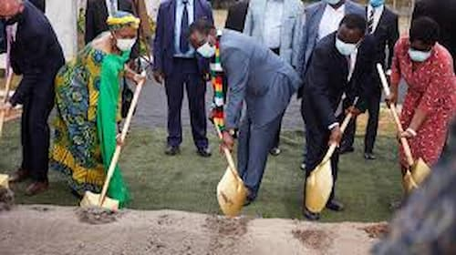

Art Direction & Performance Sizing
By pairing the semantic HTML5 picture engine with targeted media breakpoint queries, browsers can intelligently parse and request the exact right asset scale depending on current device parameters.

By pairing the semantic HTML5 picture engine with targeted media breakpoint queries, browsers can intelligently parse and request the exact right asset scale depending on current device parameters.